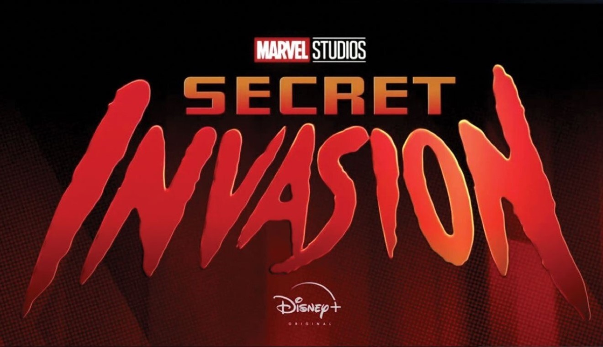

| Menu / Extra / Comics / Info |
|---|
Todas las novedades del UCM
.
.
.
Si repasamos todo lo que ha ocurrido en el Universo Cinematográfico de Marvel, lo tiene complicado.
Ya se ha estrenado la película Thor: Love and Thunder y aunque ha obtenido una gran recaudación en su primer fin de semana superando los 303 millones de dólares en todo el mundo, ha recibido críticas que no son tan buenas como otras entregas del UCM.
Así que si repasamos los antecedentes, podría significar que Taika Waititit no repetirá en Thor 5. Aunque obviamente la última palabra la tiene Kevin Feige, jefe de Marvel Studios.
Existe una curiosidad en lo que respecta a la puntuación que reciben las películas de Marvel en Rotten Tomatoes, ya que los directores que han obtenido menos de un 80% han dejado la franquicia. Hay que recordar que Taika Waititi ha obtenido un 67%, así que estaría sentenciado y no podría hacer Thor 5.